Земляные и гидроизоляционные работы.

Прежде чем начать возводить фундамент, расчищают площадку, выбранную под строительство дома, снимают верхний слой почвы (20–30 см) и разравнивают поверхность.
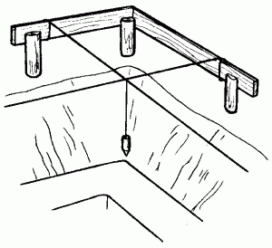
Рис. 12. Рытье котлована.
После этого отмечают границы будущего здания, отступают от них на 1 м и на этом расстоянии забивают у каждого угла по 3 колышка (стойки), строго горизонтально прибивают к ним доски и натягивают тонкую проволоку или шнуры так, как показано на рис. 12. Это нужно для того, чтобы обозначить красные линии будущего здания.
Устройство котлованаОт дна котлована выкапывают траншею глубиной до 50 см. Она понадобится для возведения нижней расширенной части фундамента. Ее можно сделать из бетона, в этом случае вертикальные стены траншеи будут являться опалубкой.
Угол откоса котлована выбирают в зависимости от вида грунта:
– при работе с вязким грунтом – 0о;
– с сыпучим грунтом – 45о;
– со средним грунтом – 60о;
– с твердым грунтом – 80о;
– со скалистым грунтом – 90о.
Перед началом работ по подготовке основания как можно точнее определяют границы участка. Помимо этого, решают и другие, не менее важные вопросы: устраивают подъездные пути для привозки стройматериалов, освобождают достаточное пространство для их хранения. В соответствии с планом выкорчевывают кустарники и деревья, мешающие строительству.
На расстоянии 1,5 м от будущей ямы для фундамента устанавливают обноску из столбиков, соединенных сверху досками. На обноску натягивают шнур, выполняющий роль горизонтальной оси.
После этого приступают к земляным работам: верхний растительный слой снимают (для засыпки он не годится) и приступают к рытью траншеи. Следует отметить, что ямы для фундаментов роют непосредственно перед строительством: если надолго оставить котлован открытым, его стенки обрушатся, а дно превратится в вязкую жижу под действием осадков.
При закладке фундамента необходимо уделить особое внимание устройству дренажной системы, предназначенной для понижения уровня грунтовых вод и отводки поверхностных.
Существует несколько разновидностей дренажа:
– канавы;
– гончарный дренаж;
– кирпичный дренаж;
– дренажный колодец;
– кротовый дренаж.
Самое простое и вместе с тем недорогое средство для осушения участка – канавы. Они имеют некоторое преимущество на равнинной и низинной местности, где трудно предоставить необходимый угол наклона для создания, например, гончарного дренажа. Вода, собранная в канавы, с течением времени испаряется или же (если ее очень много) поступает в водосборник.
Гончарный дренаж делают с помощью коротких глиняных или пластмассовых труб, уложенных впритык друг к другу по схеме «елочка» в траншеях, предназначенных для отвода поверхностных вод. Более целесообразно применение пластиковых труб, которые в случае необходимости могут быть согнуты.
Кирпичный дренаж устраивают на небольших по площади участках. Для этого выкапывают яму глубиной не менее 2 м, ее стенки выкладывают кирпичами, не скрепленными цементным раствором, чтобы вода могла свободно просачиваться между ними. Колодец засыпают битым кирпичом, а сверху укладывают слой дерна для предупреждения заиливания. Довольно часто для устройства дренажа используют бетонные трубы.
Частой ошибкой строителей-непрофессионалов при устройстве дренажной системы является отсутствие стока. Результатом такой недоработки станет скапливание у подпорной стены воды, которая будет методично разрушать каменную или кирпичную кладку фундамента. Этого можно избежать, если использовать на участке одновременно два вида дренажной системы – гончарный дренаж и дренажный колодец. Делают это таким образом: у основания стены прокладывают одиночную гончарную дренажную трубу с необходимым уровнем уклона, после чего подсоединяют ее к дренажному колодцу.
Не рекомендуется укладывать канализационные трубы непосредственно на дно ямы под фундамент. В том месте, где труба пересекает фундамент, ее обертывают толстым войлоком.
Виды грунтовПри устройстве фундамента необходимо правильно определить вид грунта. Для этого на месте предполагаемого строительства берут пробы грунта, которые затем подвергают инженерно-геологическим исследованиям.
Существует несколько видов грунта:
– скалистые;
– обломочные;
– песчаные (мелкозернистые и пылеватые пески);
– пылеватые (плывуны);
– суглинистые;
– глинистые.
Каждый из них характеризуется определенными показателями.
Скалистые грунты считаются самыми надежными. Они достаточно прочны, не проседают и не размываются. Вспучивание в зимнее время таким грунтам не грозит. При строительстве дома на участке со скалистым грунтом можно обойтись без заглубления и возводить фундамент непосредственно на поверхности грунта.
Обломочные, или хрящеватые, грунты содержат обломки камней и вкрапления гравия. Они не размываются и не сжимаются. В условиях таких грунтов рекомендуется устраивать фундаменты с заглублением не более 50 см.
Песчаные грунты, состоящие из мелкозернистых и пылеватых песков, имеют свойство проседать, то есть сильно уплотняться под нагрузкой. Эти грунты не задерживают воду и в зимний период незначительно промерзают. Заглубление фундамента на песчаных грунтах рекомендуется проводить на глубине от 40 до 70 см.
Особого внимания при строительстве заслуживают пылеватые грунты, которые часто называют плывунами. Устраивать фундамент на таких грунтах довольно сложно и опасно. Строительство дома на плывунах лучше всего вести с опытными строителями, предварительно проконсультировавшись с работниками проектной организации.
Суглинистые грунты занимают промежуточное положение между песчаными и глинистыми. В их составе от 3 до 30 % глины. При наличии в грунте менее 10 % глины грунт называется супесчаным, и при повышенном содержании – суглинистым.
Глинистые грунты – наихудший из вариантов, который может встретиться при постройке дома. Грунты такого вида могут сжиматься, размываться и вспучиваться при промерзании. В этом случае глубина закладки фундамента устраивается на всю глубину промерзания.
Следует отметить, что в сухом состоянии глинистые грунты могут служить хорошим основанием (в этом случае их относят к условно непучинистым), а при значительном насыщении водой и при малой плотности становятся довольно жидкими и сильно вспучиваются при промерзании.
Глинистые грунты иногда называют просадочными, так как, находясь в напряженном состоянии под действием нагрузки от строения, они дают просадку.
Различают два вида просадочных грунтов:
– грунты, просадка которых от собственного веса не превышает 5 см;
– грунты, просадка которых от собственного веса превышает 5 см.
Основной причиной неустойчивости или разрушения фундамента является вспучивание некоторых грунтов в зимний период, а это, в свою очередь, связано с глубиной промерзания грунта в районе строительства и с глубиной залегания грунтовых вод.
Сила вспучивания настолько велика, что в состоянии приподнять даже очень большие здания, и справиться с ней можно только в том случае, если будут соблюдены все рекомендации при устройстве фундамента.
Глубина промерзания грунтовНа поведение многих грунтов существенное влияние оказывает уровень подземных вод. В идеале глубина промерзания должна быть меньше глубины залегания грунтовых вод; в том случае, когда показатель глубины промерзания превышает показатель глубины залегания грунтовых вод, отмечается их промерзание, следствием которого является вспучивание грунта.
Если бы вспучивание было равномерным, оно не создавало бы проблем: зимой грунт поднимался бы равномерно, а весной так же равномерно опускался.
Грунты с отрицательной или нулевой температурой, имеющие в своем составе ледяные включения, называют мерзлыми. Если на протяжении нескольких лет мерзлые грунты не подвергались оттаиванию, их называют вечномерзлыми. Вечномерзлые грунты, в свою очередь, делятся на три категории:
– твердомерзлые;
– пластичномерзлые;
– сыпучемерзлые.
В строительных организациях при работе с грунтами учитывают такую их характеристику, как связанность, которая изменяется в зависимости от влажности грунтов. Связанность проверяют углом естественного откоса, который образуется откосом свободно насыпанного грунта и горизонтальной плоскостью.
Во избежание обрушения откосов при копании траншей для фундаментов необходимо правильно определить угол естественного откоса грунтов. Поможет в этом табл. 4.
Таблица 4. Определение углов естественного откоса грунтов (в градусах)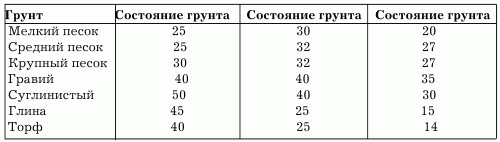
При строительстве дома необходимо учитывать такой фактор, как глубина промерзания грунта, зависящая от географического положения местности. Так, средняя глубина промерзания для следующих городов составляет:
1. Волгоград, Псков, Великие Луки, Смоленск – 1,2 м;
2. Пенза, Саратов, Кострома, Вологда – 1,5 м;
3. Москва, Санкт-Петербург, Новгород, Воронеж – 1,4 м.
Действие грунтов на фундаментыКак известно, вести строительство можно практически на любом грунте. Примером тому являются дворцы Санкт-Петербурга и здания Норильска. Следовательно, основная проблема заключается в принятии верного технического решения при возведении устойчивого фундамента и в правильном выборе средств, требующихся для строительства.
В первую очередь необходимо установить, как взаимодействуют грунт и фундамент. Дело в том, что не только грунт оказывает воздействие на фундамент, но и фундамент на грунт. Под тяжестью сооружения грунт проседает. Как правило, это происходит в первые два года после строительства (рис. 13).
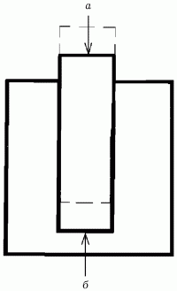
Рис. 13. Проседание грунта: а – сила тяжести; б – сила сопротивления.
Невозможно полностью исключить просадку грунта, поэтому перед строителями ставится задача сделать ее равномерной, в противном случае возможно опущение одной части дома на 10, другой – на 5, третьей – на 25 см. Подобный перекос дома не только приводит к образованию трещин, но и грозит полным разрушением дома.
Как уже говорилось ранее, основной причиной движения грунта и перемещения фундамента является действие сил морозного пучения. Насыщенные водой грунты при замерзании увеличиваются в объеме, иначе говоря, вспучиваются, сжимают фундамент и выталкивают его (рис. 14).
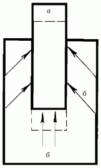
Рис. 14. Выталкивание фундамента под действием сил морозного пучения: а – сила тяжести; б – сила морозного пучения.
Нередко действие сил морозного пучения на фундамент столь велико, что происходит разрушение здания, например, нижняя часть фундамента отделяется от верхней (рис. 15).
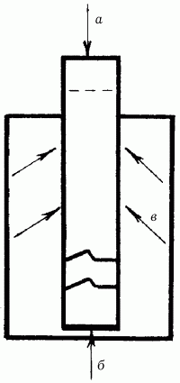
Рис. 15. Разрушение фундамента под действием сил морозного пучения: а – сила тяжести; б – сила сопротивления грунта; в – сила морозного пучения.
Худший вариант – опрокидывание фундамента вместе с домом. Это часто происходит при боковых смещениях пластов грунта, особенно в тех случаях, когда дом располагается на холме (рис. 16).
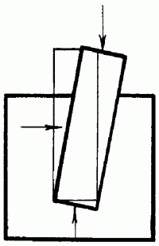
Рис. 16. Опрокидывание фундамента вместе с домом.
Конечно, при оттаивании фундамент снова проседает, однако далеко не всегда возвращается в исходное положение. В результате дом становится неустойчивым.
Для закладки фундамента лучшим считается грунт, глубина промерзания которого выше уровня залегания грунтовых вод. Во всех остальных случаях следует выбирать самый надежный тип фундамента, не считаясь с расходами, и проводить работы для понижения уровня грунтовых вод (осушение участка, прокладку дренажа).
При заглублении фундаментов ниже расчетной глубины промерзания грунта силы пучения исключаются. Если это условие выполняется, то такой фундамент будет достаточно надежным.
Для защиты фундаментов от поверхностных вод, появляющихся в результате таяния снега и выпадения дождей, требуется хорошая гидроизоляция.
Гидроизоляция каменных конструкций материалами на основе синтетических смол, полимеров и битумаКаменная кладка, выполненная из любых материалов, обладает способностью поглощать и пропускать воду. Поэтому каменные конструкции, имеющие непосредственное соприкосновение с грунтом, подвергаются водонасыщению.
Проникнув через кладку в подвал, вода может достичь первого и даже второго этажа, в результате в здании повысится уровень влажности и будет сырость. В целях предохранения фундаментов, стен и других конструкций от проникновения влаги устраивают гидроизоляцию, окрашивая (окрасочная гидроизоляция) или оклеивая (оклеечная гидроизоляция) поверхности гидроизоляционными материалами. В качестве изоляции используют также асфальтовую или цементную (со специальными цементами) штукатурку.
Окрасочную гидроизоляцию выполняют битумной мастикой, приготовленной из битума разных марок и наполнителя (тальк, известь-пушонка, асбест), а также материалами на основе синтетических смол и полимеров.
Оклеечная гидроизоляция предусматривает использование рулонных материалов – таких, как гидроизол, рубероид, изол, бризол, которые приклеивают к поверхности с помощью битумной или других видов мастик. На стены подвалов или поверхность фундаментов гидроизоляцию наносят со стороны, примыкающей к грунту, до уровня отмостки или тротуара.
В ряде случаев при высоком уровне грунтовых вод оклеечную изоляцию защищают со стороны грунта глиняным замком, прижимными стенками из кирпича и др. (рис. 17).
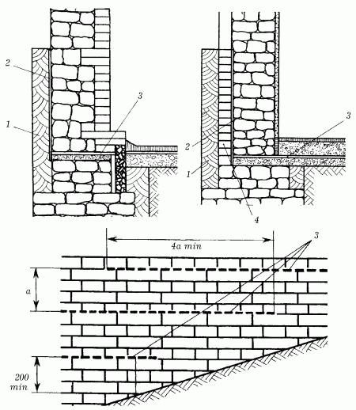
Рис. 17. Гидроизоляция фундаментов: 1 – глиняный замок; 2 – оклеечная изоляция; 3 – горизонтальная изоляция; 4 – прижимная стенка.
Горизонтальная гидроизоляция служит для защиты стен подвалов и зданий от грунтовой влаги, которая проникает со стороны подошвы фундаментов. В бесподвальных зданиях ее делают в цокольной части на 20 см выше уровня отмостки или тротуара. Необходимо отметить, что большую роль в защите фундамента постройки от влаги играют отмостки (рис. 18).
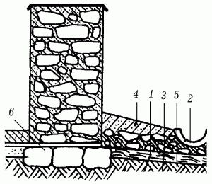
Рис. 18. Устройство отмостков: 1 – цементный раствор; 2 – водосточная канава; 3 – битый кирпич; 4 – глина; 5 – грунт; 6 – фундамент.
Если отмостка имеет уклон вдоль стены здания, то гидроизоляцию делают уступами таким образом, чтобы слои изоляции перекрывали друг друга на длину, равную четырехкратному расстоянию между ними по высоте. В зданиях с подвалами горизонтальную изоляцию устраивают в двух уровнях: первый – у пола подвала, второй в цокольной части выше уровня отмостки или тротуара.
В зависимости от степени водонасыщения грунта, уровня залегания грунтовых вод и других условий гидроизоляционный слой горизонтальной изоляции выполняют в виде стяжки из цементного раствора на портландцементе с уплотняющими добавками (алюминатом натрия и др.) толщиной 20–25 мм или двух слоев толя или рубероида, приклеенных мастикой (толь – дегтевой, рубероид – битумной).
В некоторых случаях гидроизоляцию делают в виде асфальтовой стяжки слоем 25–30 мм. При этом слой стяжки наносят по фундаменту или стенам подвала и продолжают кладку в обычной последовательности, распределяя первые ряды камня на предварительно нанесенном слое кладочного раствора.
Для получения гидроизоляции высокого качества поверхность предварительно очищают от мусора, грязи, пыли, выравнивают и просушивают.
Окрасочную изоляцию обычно выполняют из битумных мастик. Ее наносят щеткой на высушенные и огрунтованные поверхности, используя приемы малярных работ. При необходимости изолируемые поверхности (например, бутовые стены) предварительно выравнивают раствором. Как правило, битумную мастику наносят слоями толщиной около 2 мм в 2–3 приема, чтобы полностью покрыть обрабатываемую поверхность. Наносить каждый последующий слой изоляции следует только после того, как предыдущий слой застынет и будет проверено его качество.
Окрасочная гидроизоляция должна быть сплошной, без трещин, вздутий и отставаний (эти дефекты появляются, если мастика нанесена на неочищенные или сырые поверхности). При наличии дефектных участков их расчищают, сушат и покрывают мастикой заново.
При укладке горизонтальной оклеечной гидроизоляции из толя или рубероида сначала на подготовленную поверхность кладки наклеивают первый слой изоляции. По нему щеткой или стальным гребком распределяют разогретую мастику (толщина слоя не более 1–2 мм) и на него наклеивают второй слой изоляции.
Чтобы слои лучше сцеплялись, рубероид или толь заранее очищают от защитной слюдяной или песочной посыпки стальными щетками, затем острым ножом разрезают на куски нужного размера и свертывают в рулоны, которые при устройстве изоляции раскатывают по обмазанной мастикой поверхности. Второй слой изоляции покрывают сверху слоем горячей мастики толщиной 2 мм и продолжают кладку.
Оклеечную гидроизоляцию боковых поверхностей фундаментов и стен подвалов с помощью рулонных материалов выполняют в такой же последовательности, как и горизонтальную. Перед наклейкой гидроизоляционного слоя основание очищают от пыли и мусора и высушивают: на запыленные и влажные поверхности мастику наносить нельзя, так как изоляция будет отслаиваться.
Поверхность изолируемых конструкций должна быть ровной, сухой, без впадин и бугров. Перед наклеиванием ее сначала огрунтовывают мастикой, затем наклеивают последовательно один за другим слои изоляции; каждый слой оклеечной вертикальной изоляции соединяют с горизонтальной изоляцией внахлест не менее чем на 150 мм, чтобы в место стыка горизонтальной и вертикальной изоляции не проникала вода. Стыки слоев изоляции также делают внахлест на 100–150 мм.
На горизонтальные и слабо наклонные (до 25°) поверхности материал наклеивают следующим образом: после высыхания грунтовки раскатывают рулон и подклеивают один конец полотнища, фиксируя нужное направление материала. Затем рулон скатывают, наносят на изолируемую поверхность слой мастики, снова раскатывают рулон и наклеивают его на подготовленное основание. В каждом последующем слое полотнище должно перекрывать предыдущий слой не менее чем на 100 мм в продольных стыках и не менее чем на 150 мм в поперечных. Расположение одного шва над другим в смежных слоях изоляции и наклейка рулонных материалов во взаимно перпендикулярном направлении не допускаются.
На вертикальные и сильно наклонные (25°) поверхности рулонные материалы наклеивают участками – так называемыми захватками высотой 1,2–1,5 м в направлении снизу вверх.
Материалы предварительно раскраивают на куски с учетом нахлеста. При наклеивании рулоны тщательно притирают к основанию и к ранее наклеенным слоям деревянными шпателями с удлиненной ручкой; на горизонтальных поверхностях наклеиваемые материалы, кроме того, прикатывают катками массой 70–80 кг с мягкой обкладкой.
Швы нахлеста дополнительно промазывают мастикой, отжатой при притирании и укатке материала. Наружную поверхность последнего слоя изоляционного материала покрывают сплошным слоем мастики и посыпают горячим сухим песком.
Гидроизоляция фундаментов традиционными рулонными материаламиГидроизоляция и ремонт конструкций, подвергающихся действию подземных и надземных вод, будет необходимо не только во время строительства дома, но и в период его дальнейшей эксплуатации.
Известно, что бетонные, каменные и кирпичные здания в большинстве случаев подвергаются воздействию агрессивных подземных вод, что, в свою очередь, приводит к следующим процессам:
– коррозии поверхности;
– выщелачиванию;
– нарушению структуры;
– старению бетона;
– потере прочности;
– ухудшению водопроницаемости;
– потере плотности.
В результате происходит полное разрушение сооружения. Во избежание подобной неприятности его защищают с помощью специальных материалов.
Условно все защитные материалы делятся на две группы:
– традиционные (рулонные и мастичные), изготовленные на основе полимерных смол, полимеров, битумных мастик и др.;
– материалы проникающего действия на основе минерального сырья.
В настоящее время наиболее популярными изоляционными средствами считаются материалы второй группы, принцип действия которых предусматривает проникновение химических составляющих в пористую структуру материала защищаемой конструкции с последующим заполнением пор кристаллогидратами, благодаря чему эксплуатационные характеристики бетона с течением времени только повышаются.
Нередко используют гидроизоляцию фундаментов традиционными материалами. Выполняют ее несколькими способами:
1) укладывают цементный раствор слоем 2–3 см, выравнивают и сушат, после чего настилают рубероид;
2) из 1 части разогретой сосновой смолы и 0,5 частей просеянной извести-пушонки готовят мастику, которую в горячем виде наносят тремя слоями на цемент. При этом толщина каждого слоя должна быть не менее 3 мм. Верхнюю часть фундамента покрывают горячей битумной мастикой и наклеивают на нее слой рубероида (рис. 19).
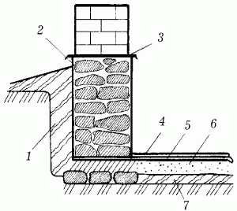
Рис. 19. Гидроизоляция фундаментов традиционными рулонными материалами: 1 – глина; 2 – слой цементного раствора, снаружи покрытый битумом; 3 – гидроизоляция; 4 – цементный пол; 5 – гидроизоляция; 6 – слой керамзита; 7 – глина.
В домах с подвалом рекомендуется устраивать двухуровневую гидроизоляцию: первый уровень размещают в фундаменте на уровне пола подвала, а второй – в цоколе, на 20 см выше поверхности отмостки, при этом стены и пол подвала изолируют.
Если уровень грунтовой воды ниже уровня пола подвала, то с наружной стороны соприкасающиеся с грунтом стены покрывают битумом. На пол кладут слой жирной глины, уплотняют, покрывают слоем бетона, выравнивают и выдерживают в течение 14 дней.
По истечении указанного срока поверхность пола покрывают слоем битума и наклеивают два слоя рубероида или другого изоляционного материала. Сверху покрывают цементным раствором и железнят.
Для защиты конструкций фундамента по периметру всего дома устраивают подмостку шириной не менее 700 мм.
Гидроизоляция фундаментов материалами проникающего действияМеханизм работы гидроизоляционных материалов проникающего действия можно рассмотреть на примере разработанной на основе минерального сырья смеси «Гидротекс», выпускаемой в России. Этот материал уникален тем, что в нем сочетаются признаки традиционных и проникающих защитных материалов.
Перед работой сухие смеси «Гидротекс» растворяют в воде, после чего наносят на предварительно увлажненную, очищенную от грязи поверхность. Гладкие поверхности зачищают песком под высоким давлением.
Химически активные вещества гидроизоляционных смесей (кварцевый песок и активирующие добавки) проникают в пористую структуру бетона, где образуют нерастворимые нитевидные кристаллы, заполняющие микротрещины, поры и капилляры бетона. В результате уплотненная структура бетона перекрывает доступ воде (но не воздуху).
Глубина проникновения материала «Гидротекс» в структуру бетона составляет 100 мм, в зависимости от плотности бетона (рис. 20).
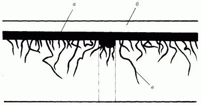
Рис. 20. Принцип работы гидроизолирующих материалов проникающего действия: а – слой гидроизолирующего материала; б – новое покрытие; в – кристаллы, проникающие в бетон.
Основные достоинства материалов проникающего действия, подобных смесям «Гидротекс», таковы:
– высокие физико-механические свойства;
– создание надежного водонепроницаемого барьера;
– возможность использования как с внутренней, так и с наружной стороны сооружения;
– простота применения (даже начинающий строитель сможет использовать такие средства);
– экологически чистые компоненты;
– не токсичны.
Шовная гидроизоляцияШовную гидроизоляцию применяют для защиты швов и стыков подземных и надземных конструкций от влаги. Гидроизоляционный шовный материал состоит из цемента, кварцевого песка и активирующих добавок. Эффект гидроизоляции достигается за счет химически активных компонентов, а также увеличения состава в объеме.
Основные характеристики шовной гидроизоляции:
– нетоксична;
– может применяться как на сухой, так и на влажной бетонной поверхности;
– предел прочности на сжатие составляет 18 Мпа;
– водонепроницаемость – W10;
– морозостойкость – F200;
– высокая коррозионная стойкость.
Сухую смесь разводят водой комнатной температуры, тщательно перемешивают и наносят на подготовленную поверхность. Раствор рекомендуется готовить в количестве, которое можно использовать в течение ближайших 30 минут.
Заметные трещины, сколы или швы расширяют по всей длине и расчищают на глубину до 2,5 см. Подготовленную поверхность увлажняют, после чего наносят сначала слой грунтовки, а через 5–6 часов – шовный раствор.
Гидроизоляция цоколяВ защите фундамента от вредного воздействия дождевых и талых вод нуждается не только подземная часть фундамента, но и цоколь. Гидроизоляция должна не только противостоять потокам воды во время таяния снега или ливневых дождей, но и предохранять стенки фундамента от капиллярной влаги, предотвращать впитывание воды его поверхностями.
Гидроизоляцию обычно выполняют в обеих плоскостях – вертикальной и горизонтальной. Для создания горизонтального слоя гидроизоляции под основание фундамента и в местах его сочленения со стенами укладывают рулонные водонепроницаемые материалы.
Для защиты вертикальных поверхностей стенок можно несколько раз обмазать их битумом. Однако такой способ эффективен только в том случае, если дом устраивается на сухом грунте. Дело в том, что срок службы битума невелик, уже через 3–3,5 года он начинает покрываться трещинами, а исправить это, к сожалению, уже невозможно.
Таким образом, лучше не экономить на возведении фундамента и пользоваться передовыми материалами для обмазочной гидроизоляции – такими, как, например жидкое стекло.
В отличие от битума этот материал не утрачивает своих свойств со временем. Кроме того, при устройстве фундамента на влажном грунте этот вариант является наиболее предпочтительным.
Нередко в качестве обмазочной гидроизоляции используют современные гидроизоляционные материалы типа «ЛАХТА» на основе портландцемента и кварцевого наполнителя, удерживающих воду в процессе твердения, повышающих водостойкость и ускоряющих схватывание.
В процессе работы этот материал рекомендуется наносить на предварительно очищенную, обеспыленную и обезжиренную поверхность (она может быть влажной) с помощью кисти или валика, слоем, толщина которого не превышает 3 мм. Для повышения прочности гидроизоляционного покрытия через 2 часа после нанесения первого слоя следует нанести второй слой такой же толщины.
Гидроизоляцию цоколя можно произвести оклеечным способом. Он наиболее эффективен в случае, если уровень грунтовых вод высок, а в проекте сооружения планируется подвал или цокольный этаж. В данном случае по всему периметру фундамент защищают современными рулонными материалами (стеклоизолом или геомембранами).
В настоящее время строители используют еще один эффективный метод защиты фундамента, так называемый метод проникающей гидроизоляции. Он заключается в следующем: на влажную поверхность фундамента наносят специальные составы, которые, попадая в заполненные влагой микротрещины и поры, кристаллизуются и закупоривают их. При этом при образовании новых трещин процесс самопроизвольно возобновляется. Действие этих веществ продолжается до тех пор, пока в обработанной поверхности сохраняются свободные активные вещества защитных составов.
Для ликвидации протечек в бетоне используют и так называемую водяную пробку – сухую смесь на основе гидравлических цементов, наполнителей и химически активных добавок. Принцип действия водяной пробки состоит в следующем: через несколько минут после нанесения на поверхность она расширяется и блокирует приток воды.
Следует отметить, что перед использованием данного гидроизоляционного материала поверхность фундамента и имеющиеся в нем трещины предварительно обезжиривают и очищают от различных загрязнений, а затем трещины немного расширяют и смачивают чистой водой. Водяную пробку готовят следующим образом: 1 кг сухой смеси разбавляют 220 мл воды, температурой 70 °C, и тщательно размешивают в течение 2 минут.
Приготовленный раствор используют сразу же после приготовления (повторно его использовать нельзя). Для этого берут небольшое количество раствора и, придав ему форму цилиндра, вдавливают в трещину сильным нажатием руки, где удерживают не менее 1 минуты. В том случае, если смесь получилась слишком жидкой и вода течет сильно, пробку удерживают в течение 5–6 минут. Излишек раствора затем убирают. После заделки трещин поверхность фундамента обрабатывают проникающими, а затем шовными гидроизоляционными материалами.
Усиление фундаментовКаждый год весной после оттаивания грунтов наблюдается образование трещин в конструкциях строящихся и уже построенных зданий. Эти трещины – следствие ошибок, допущенных в период закладки и возведения фундамента.
Прежде чем предпринимать какие-либо меры к устранению этих дефектов, выясняют причины их появления. После этого делают все возможное, чтобы повысить несущую способность грунтов основания или фундаментов и перекрытий строения.
Для повышения несущей способности грунтов основания используют следующие способы:
– уплотнение грунтов;
– химическое закрепление грунтов;
– укрепление свай;
– инъекции цементного и прочих растворов в материал фундамента.
При относительно небольшом увеличении нагрузки на старый фундамент или при возможности возникновения его деформации усиление фундамента производят следующим образом: из подвального помещения или снаружи сквозь фундамент проделываются инъекционные скважины небольшого размера, в которые под высоким давлением нагнетают специальные растворы, заполняющие все пустоты, уплотняющие и пропитывающие грунты (рис. 21).
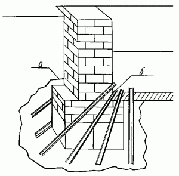
Рис. 21. Усиление фундаментов с помощью инъекционных скважин: а – зона распространения раствора; б – буроинъекционные скважины.
Наиболее приемлемый способ усиления фундамента должен определить квалифицированный мастер. Для этого следует обратиться за советом в проектный институт.